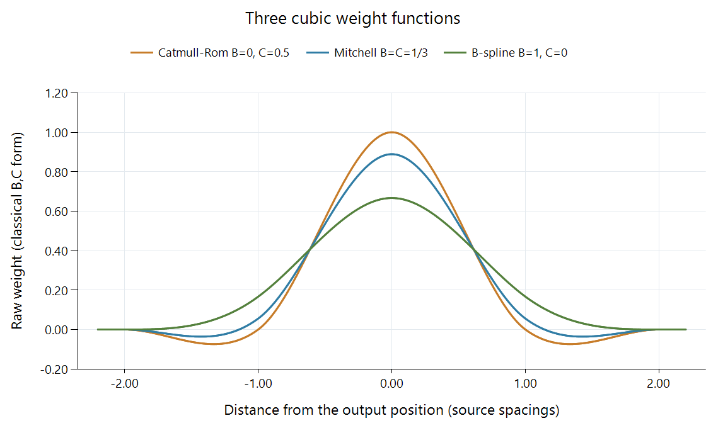

Bicubic Video Scaling
“Bicubic” describes a family of reconstruction methods. Its cubic weights can be chosen to interpolate through original samples, smooth them, or trade sharpness against overshoot. The parameters make those choices concrete.
In a common separable implementation, four nearby samples contribute along each axis. A direct two-dimensional evaluation therefore combines a four-by-four neighborhood. Reusable horizontal and vertical passes can perform that calculation without evaluating sixteen independent weights from scratch for every output.

The curves use the classical B,C polynomial form below. They describe weight functions, not output brightness. Output contributions are normalized for each sampling position.
Two parameters change the shape
One widely used cubic family has parameters B and C. B changes smoothing through the sample positions, while C shapes the outer contributions and edge behavior. Three illustrative choices are:
| Choice | B | C | Raw central value K(0) in the classical form |
|---|---|---|---|
| Catmull-Rom | 0 | 0.5 | 1 |
| Mitchell-Netravali | 1/3 | 1/3 | 8/9 |
| Cubic B-spline | 1 | 0 | 2/3 |
Catmull-Rom's weights at the other integer source positions are zero, so it passes through an isolated original sample at its own coordinate. The other two choices distribute some contribution among neighboring samples even there. For an isolated unit sample surrounded by zeros, their reconstructed value at that source coordinate is respectively 1, 8/9, or 2/3 under the normalized classical weighting.
This explains a visible difference between interpolation and smoothing. The B-spline-shaped curve is broad and positive. The Catmull-Rom and Mitchell curves include negative outer portions that can reinforce a transition while permitting overshoot.
An Emby conversion or app renderer encountering the label bicubic needs the actual stage's implementation and parameters to reproduce its appearance. A family name alone does not select one of these three curves.
Four contributions at a half-sample position
Place the output at x = 0.5, between source indices 0 and 1. For Catmull-Rom, the participating indices −1, 0, 1, and 2 receive weights:
| Source index | Example value | Weight | Contribution |
|---|---|---|---|
| −1 | 0.1 | −0.0625 | −0.00625 |
| 0 | 0.3 | 0.5625 | 0.16875 |
| 1 | 0.8 | 0.5625 | 0.45 |
| 2 | 0.9 | −0.0625 | −0.05625 |
The weights total 1 and the contributions total 0.55625. Linear interpolation of only the central pair would give 0.55. Bicubic reconstruction responds to the neighboring context as well as the pair surrounding the requested coordinate.
With the Mitchell parameters, the same four weights are approximately −0.034722, 0.534722, 0.534722, −0.034722, giving 0.553472 for these values. The difference is small for this particular smooth sequence. At an isolated feature or abrupt edge, the shapes' different central and outer contributions become more apparent.
Apply a corresponding four-weight calculation on the vertical axis to obtain the two-dimensional bicubic result. The normalized product weights retain a constant field because their total is one.
The mathematical reference
For r equal to the absolute distance in source-sample spacings, the classical B,C function is:
0 <= r < 1:
K(r) = [(12-9B-6C)r^3 + (-18+12B+6C)r^2 + (6-2B)] / 6
1 <= r < 2:
K(r) = [(-B-6C)r^3 + (6B+30C)r^2 + (-12B-48C)r + (8B+24C)] / 6
r >= 2:
K(r) = 0
The pieces meet continuously, with an outer support radius of two. At a fractional position, distance to each neighboring source index selects its raw weight. Dividing by the total raw weight handles the applicable finite sample set and normalization convention.
The pinned libplacebo implementation scales its raw cubic function to a central value of one. That differs from the raw vertical scale plotted for B greater than zero, but multiplying all weights by the same factor cancels when their sum is used for normalization. The resulting normalized contributions in the worked examples agree.
Radius, reduction, and boundaries
The four-position example concerns reconstruction without a downscaling enlargement of the footprint. A reduction can require a wider source-space footprint to suppress detail beyond the output grid's sampling capacity. The scaling process explains that scale adaptation.
At a picture border, some nominal neighbors lie outside the available array. Edge extension establishes their values before or during filtering. Around a high-contrast interior edge, negative weights can instead produce values beyond the local minimum or maximum. Those are different circumstances: one concerns access to the finite picture, the other the cubic function's response to the picture values.